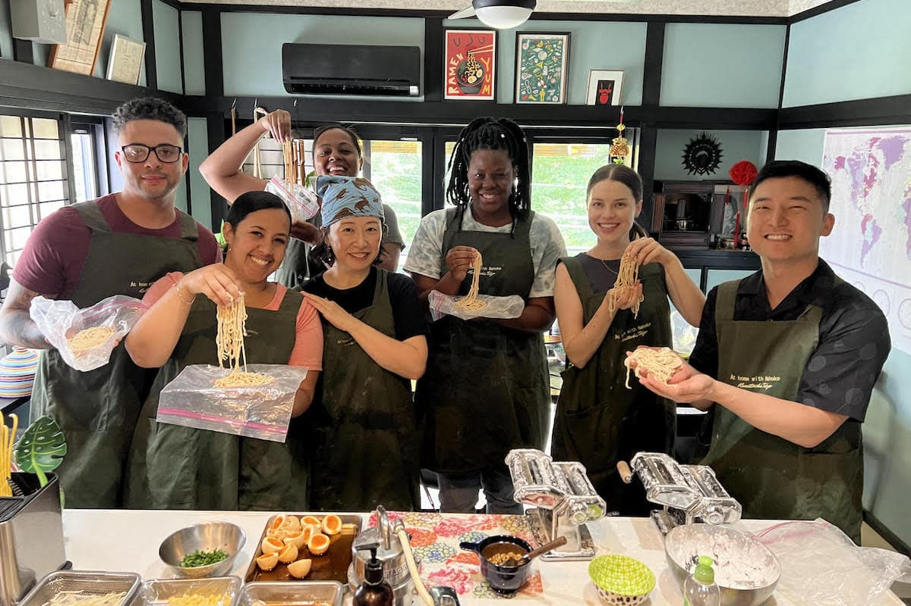
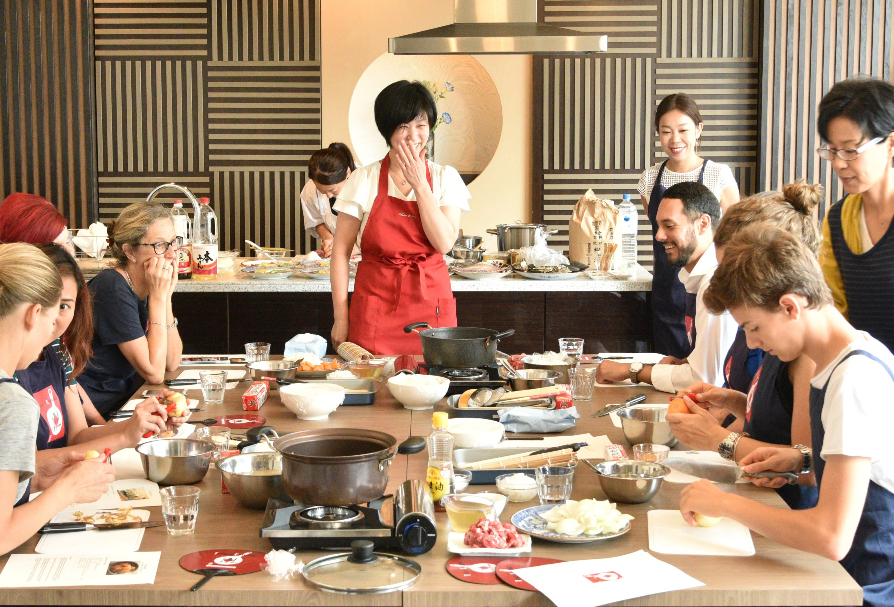

Our Classes
Learn authentic Japanese cooking
Join our professional chefs and discover the secrets of Japanese cuisine. Our classes are suitable for beginners and experienced cooks.

Join our professional chefs and discover the secrets of Japanese cuisine. Our classes are suitable for beginners and experienced cooks.

Take part in our exciting weekend workshops, where you can master sushi rolling, ramen making, and traditional Japanese desserts.